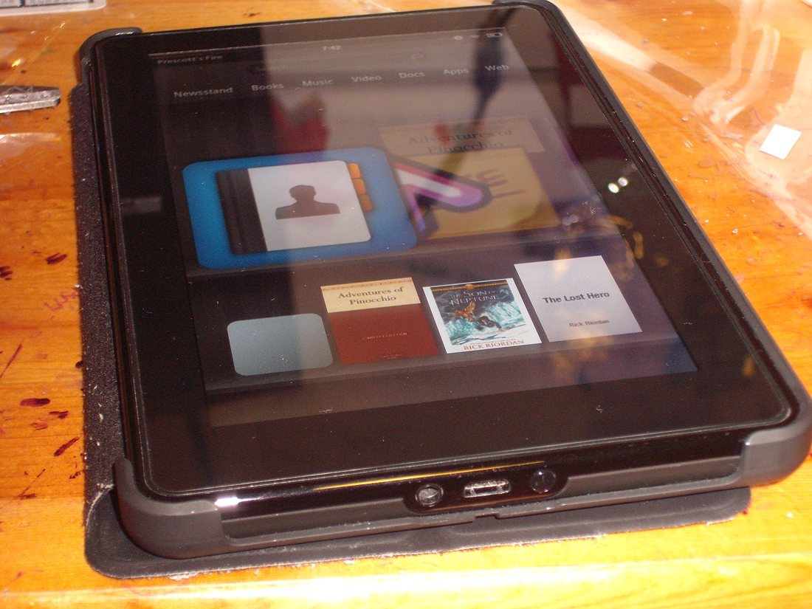

The Autopsy Report · Device #078
The Kindle Fire (1st generation, 2011)
The $199 tablet that scared the industry: a TI OMAP4430, a fork of Android, and Amazon's store on every screen.
What is this thing?
The first-generation Kindle Fire is Amazon's debut tablet, released in November 2011 at $199 — half the price of the cheapest iPad. Wikipedia It ran a fork of Android with Amazon's storefront where Google's apps would normally be, and it sold on the strength of that price and Amazon's content library.
Inside is a TI OMAP4430 — the same processor family as the Nook Tablet — with 512 MB of RAM and 8 GB of storage, assembled by Quanta. Wikipedia iFixit news
Not yet on our bench
This device is not on our bench. We don't own one, we haven't opened one, and we haven't powered one on. Everything on this page comes from public records: government filings, published teardowns by repair shops and journalists, and manufacturer documents. That's a legitimate way to learn a device's story — and it's also a limited one. There are no BareBoard photos, measurements, boot logs, or firmware notes here, because we haven't earned them yet.
When a unit of the Kindle Fire does reach our bench, this page gets a second edition: our own board photography, our own measurements, and whatever the device tells us when it wakes up. Until then, what follows is the public record, carefully sourced, with the gaps labeled as gaps.
A short history
- September 7, 2011The FCC grants equipment authorization under ID ZEV-1229 — registered to Okakopa LLC, one of Amazon's shell filers. FCC filing
- September 28, 2011Amazon announces the Kindle Fire at $199. Wikipedia
- November 2011The Fire goes on sale; teardowns land within days from iFixit and The Register. iFixit news · The Register
- March 5, 2012The FCC filing's internal photos, external photos, and user manual become public. FCC filing
The outside
A 7-inch, 1024×600 IPS display in a matte black plastic body — plain, grippable, and deliberately un-Apple. Wikipedia No camera, no volume buttons on the original; the power button sits on the bottom edge.
The photo below is a first-generation Fire from the front, as the device looked on store shelves in 2011.

The board
iFixit's teardown describes a single main board with the OMAP4430, Samsung flash, and Hynix RAM, plus a separate small board carrying the Jorjin Wi-Fi module. iFixit teardown The Register's teardown walkthrough confirms the straightforward, cost-driven layout. The Register
The FCC's internal photos (public since March 2012) show the same construction with shielded radio sections. FCC filing We have not photographed the board ourselves.
Under the microscope: the chips
What's on the board, what each part does, and how sure we are — all from public teardown records, since we haven't seen the board ourselves. Likely means the public hardware record agrees on it. Confirmed is reserved for primary sources we could verify directly, like the government's own filing. Every row links somewhere you can read more.
| Chip | What it does | How we know | Dig deeper |
|---|---|---|---|
| TI OMAP4430 | The main processor — dual-core ARM Cortex-A9. | Likely Identified by iFixit and The Register. | iFixit news |
| Samsung KLM8G2FEJA 8 GB flash |
Storage for the OS and downloaded content. | Likely Read off the board by iFixit. | iFixit teardown |
| Hynix H9TKNNN4K 512 MB DDR2 |
Working memory. | Likely Identified in teardown chip lists. | iFixit news |
| TI 603B107 | Power-management IC. | Likely Identified in teardown chip lists. | iFixit teardown |
| TI LVDS83B | Display interface — talks to the LCD panel. | Likely Identified in teardown chip lists. | The Register |
| Jorjin WG7310 TI WL1270B inside |
The Wi-Fi module, on its own small board. | Likely Module ID from teardown photos. | iFixit teardown |
| TI AIC3110 | Audio codec. | Likely Identified in teardown chip lists. | iFixit news |
| TI WS245 | Buffer/line driver in the display path. | Likely Identified in teardown chip lists. | iFixit teardown |
Not in the public chip lists: the touchscreen controller and the display driver. The chip list above is one well-documented unit — Amazon, like every tablet maker, could and did vary suppliers.
The government's file on this device
The original Fire went through the FCC as ZEV-1229. The historical grantee on the filing is Okakopa LLC — another Amazon shell name — though the modern index attributes the registration to Amazon.com Services. FCC filing Confirmed — straight from the filing index.
The grant is dated September 7, 2011; internal photos, external photos, and the user manual became public on March 5, 2012. The filing lists Wi-Fi around 346 and 339 mW on its two measured configurations. FCC filing
Debug and service modes
The user guide — a public exhibit in the FCC filing — documents the ordinary factory reset through the Settings menu. FCC filing
We found no manufacturer-published hardware debug documentation for this model, and we have not entered any mode on any Kindle Fire. Listed for orientation, not from experience.
Our posture on all of the above: we describe what's publicly documented, and we don't go knocking. No device has been probed, reflashed, or opened on our bench — there is nothing here but reading.
What public records show
It's a Nook Tablet under a different badge, roughly. Same OMAP4430 family, same 512 MB–1 GB RAM class, same 7-inch 1024×600-class display era — the 2011 budget tablets were all drinking from the same TI well. The difference was the store on the home screen. The Register
Shell-company filings are the tell. Okakopa LLC on the grant, Amazon.com Services in the modern index — the grantee history is how you trace a stealth hardware launch after the fact. FCC filing
What we haven't done
- We have not opened a 2011 Kindle Fire, photographed its board, or measured anything on it.
- We have not captured a boot log or entered any service mode on this model.
- We have not verified the touchscreen controller or display driver, which the public teardowns don't name.
By the numbers
- Model: Kindle Fire (1st generation, 2011); built by Quanta Wikipedia
- FCC ID: ZEV-1229 (granted to Okakopa LLC) FCC filing
- Main chip: TI OMAP4430 (dual-core Cortex-A9) Wikipedia iFixit news
- Memory: 512 MB RAM iFixit news
- Display: 7 in, 1024×600 IPS Wikipedia
- Storage: 8 GB Wikipedia
- Released: November 2011, $199 Wikipedia
- Wireless: Wi-Fi b/g/n Wikipedia
Words to know
Every term this page uses, in plain English. No prior knowledge required.
- OMAP
- Texas Instruments' line of mobile processors — the 44xx series powered a generation of tablets.
- PMIC
- Power-management IC: the chip that makes all the different voltages the board needs from the battery.
- Android fork
- Android's open-source base with the Google parts swapped out — Amazon's Fire OS is the famous example.
- FCC ID
- The ID the FCC assigns to each approved wireless product. Punch it into fccid.io and the whole public filing comes up.
- Shell company filing
- Amazon's practice of filing FCC hardware under names like Okakopa LLC instead of “Amazon” — the grantee history still tells the story.
- Factory reset
- Wiping the device back to out-of-box software through the Settings menu — the supported, documented way.
Sources & confidence
- Chip identities: iFixit's 2011 teardown and news write-up, plus The Register's teardown coverage. Marked Likely throughout — we haven't seen the board ourselves.
- FCC ID, grantee history, grant date, confidentiality dates, and transmit powers: the FCC filing index for ZEV-1229 — a primary source. High confidence.
- Release date, price, and assembler: the device's encyclopedia entry, cross-checked against launch coverage.
- Anything not listed here is unknown until the bench says otherwise. We'll say so, out loud, when that's the case.